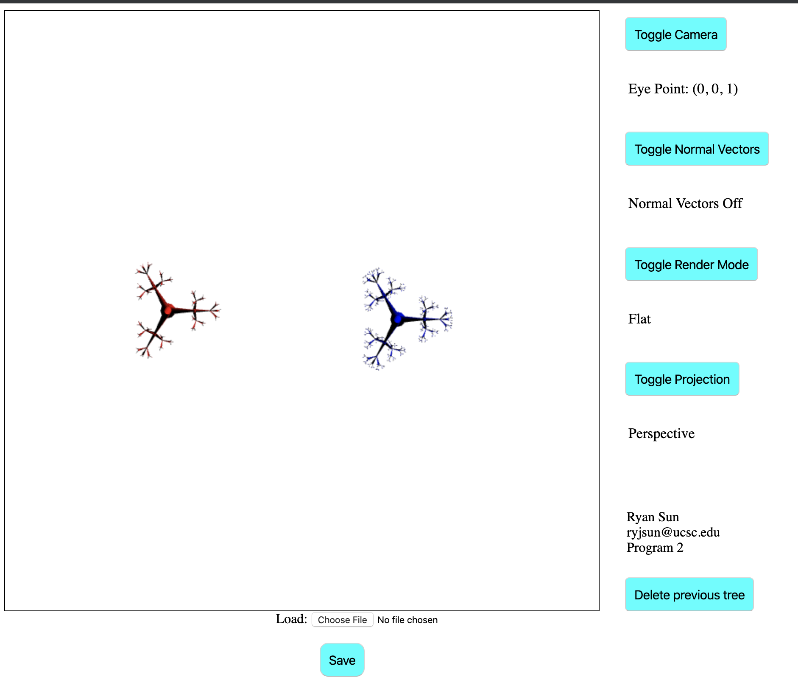
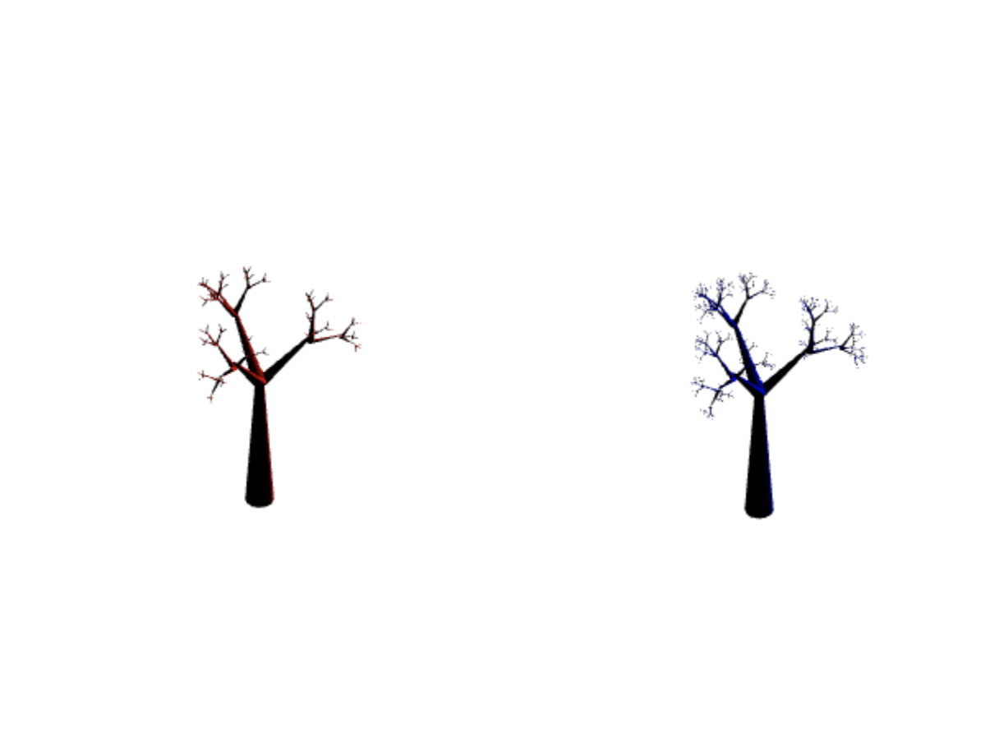
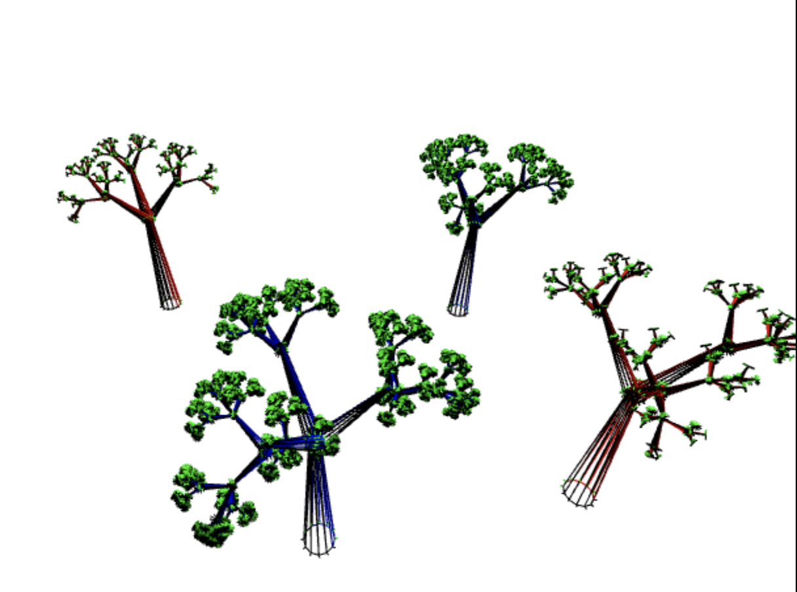

This program combines the previous assignments, drawing cylinders as the trunks and branches of
the fractal trees. Left click anywhere on the canvas for a level 4 recursion red tree and right click for a level 6 recursion blue tree.
There are buttons to toggle the render mode, projection mode, normal vectors, camera
This program also introduces load and save buttons, which can load your previous trees in or save the current
forest, respectively.
Screenshots:
  